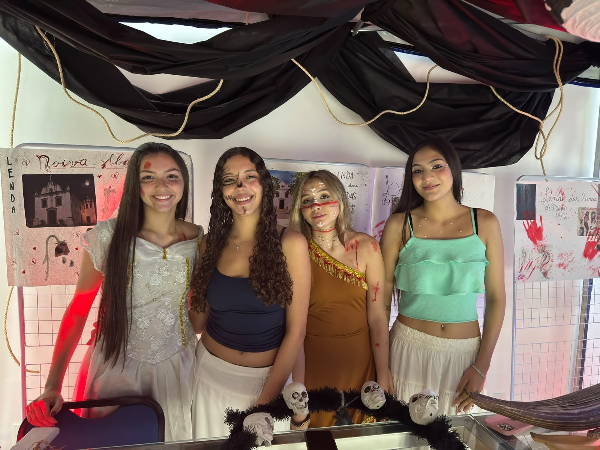
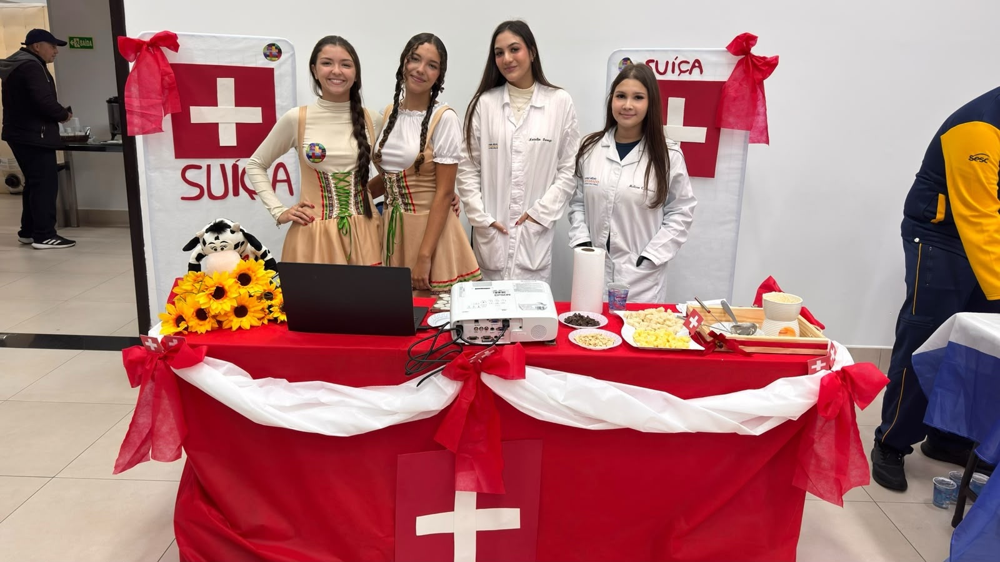
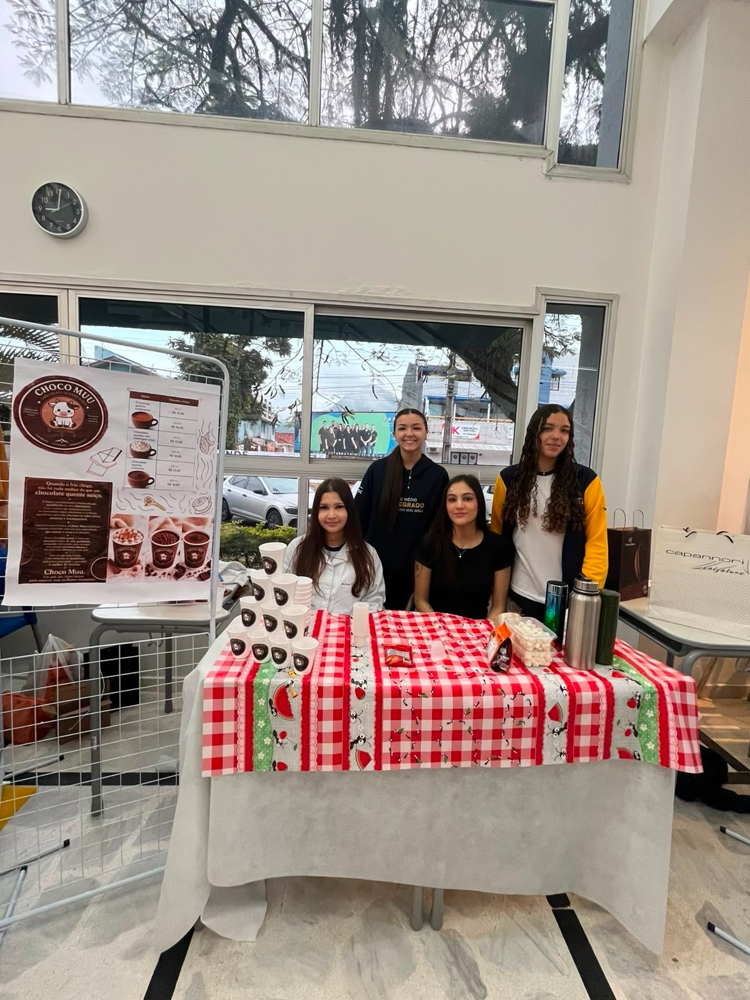
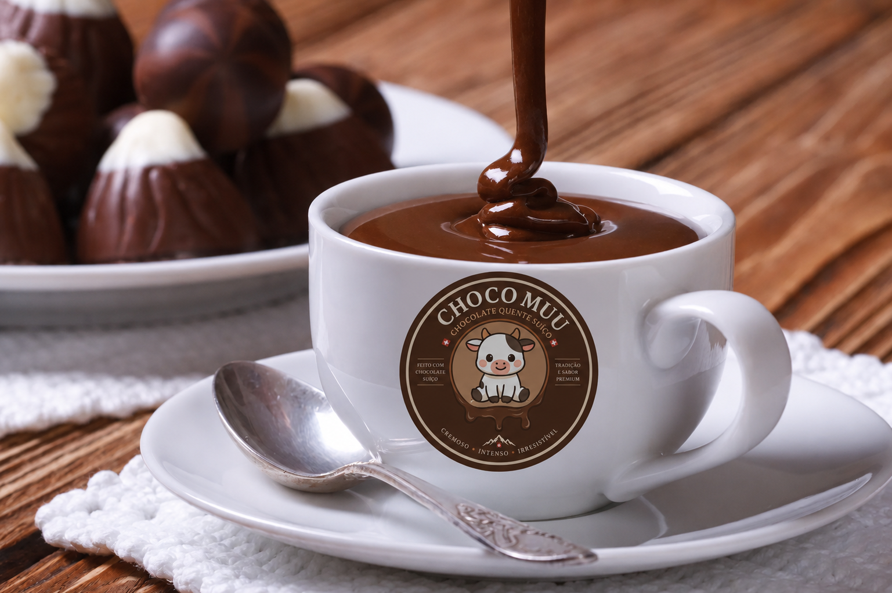
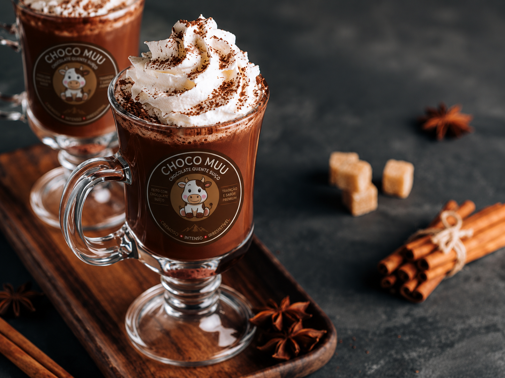

Projeto Integrador 2026.
Síntese dos trabalhos apresentados ao longo do ano e seus respectivos temas.

Feira com o intuito de fazer os alunos se aprofundarem e pesquisarem sobre diferentes culturas das cidades litorâneas do Paraná.

Compartilhamento de conhecimentos entre alunos e pais sobre diversos aspectos culturais de países ao redor do mundo.

Evento que incentiva o aprendizado sobre como criar, divulgar e vender produtos, desenvolvendo habilidades importantes para o mundo dos negócios.
Na Feira Cultural, alunos e pais compartilham conhecimentos sobre aspectos culturais de países de todo o mundo.
O nosso grupo representou a Suíça: apresentamos as tradições, as roupas típicas, a gastronomia e, claro, o chocolate suíço, que deu origem à ideia do nosso produto.
↑ Voltar ao topoA Feira do Conhecimento tem o objetivo de fazer os alunos se aprofundarem e pesquisarem sobre as diferentes culturas das cidades litorâneas do Paraná.
Nosso grupo pesquisou as lendas do litoral, como a Noiva e as Sereias de Guaratuba, e montou um estande ambientado com fantasias, maquiagem e painéis ilustrados.
↑ Voltar ao topoA Feira do Empreendedorismo é um evento que incentiva a criatividade, o trabalho em equipe e o espírito empreendedor, permitindo que os alunos desenvolvam ideias e aprendam sobre vendas e negócios.
Em nossa feira, vendemos chocolate quente, uma bebida deliciosa e cremosa, perfeita para aquecer os dias frios. Nosso objetivo é oferecer um produto saboroso, conquistar clientes e colocar em prática nossos conhecimentos sobre empreendedorismo.
↑ Voltar ao topo

O Projeto Integrador é uma atividade que reúne os conhecimentos desenvolvidos ao longo do ano, permitindo que os alunos apresentem seus trabalhos, pesquisas e aprendizados.
↑ Voltar ao topo